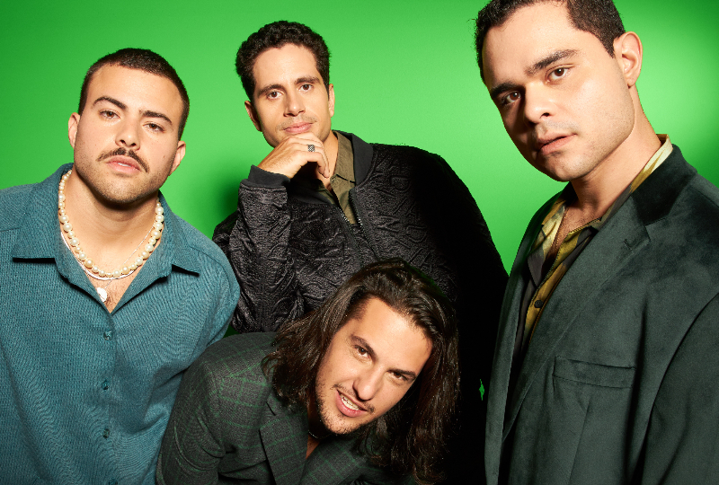
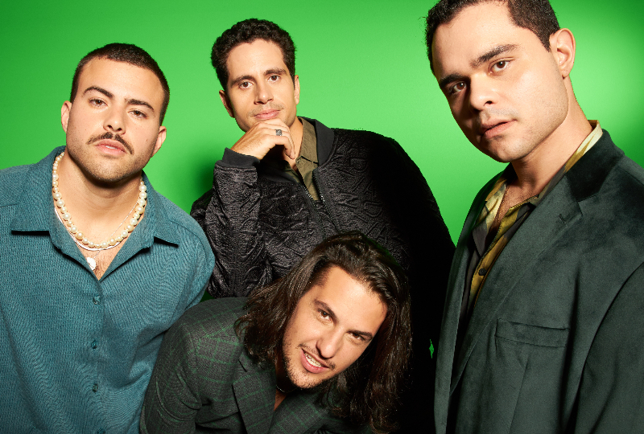
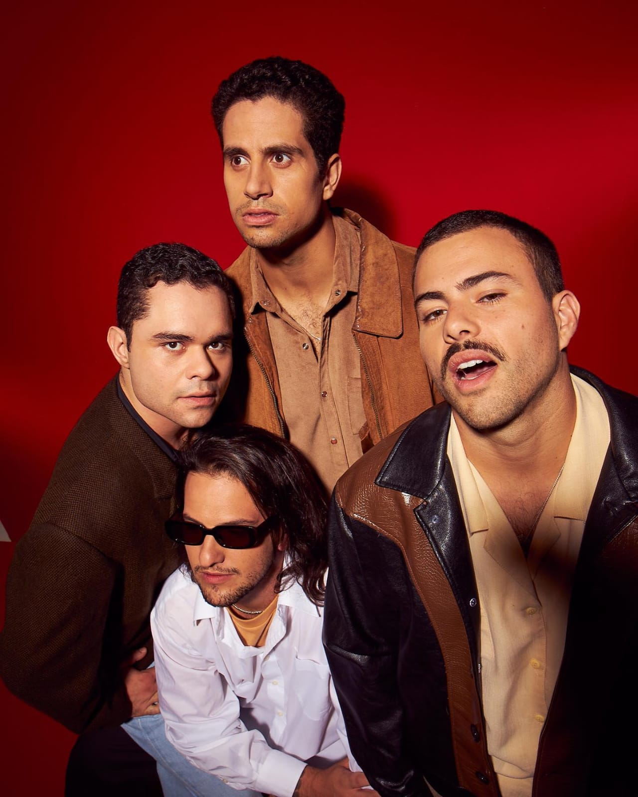
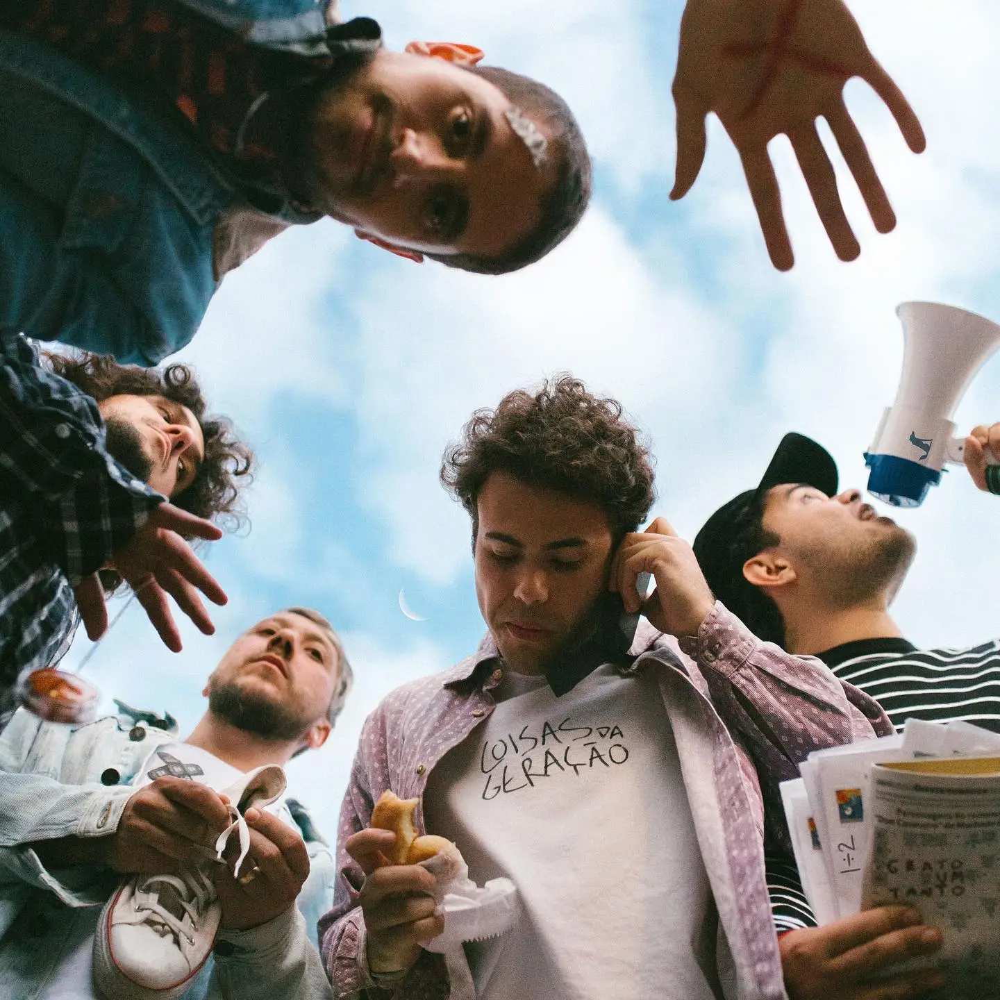
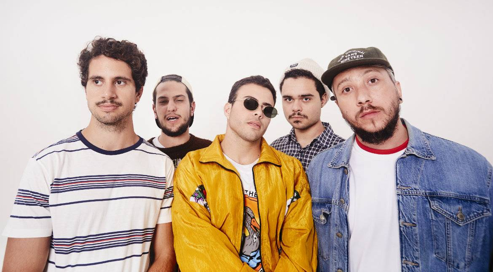
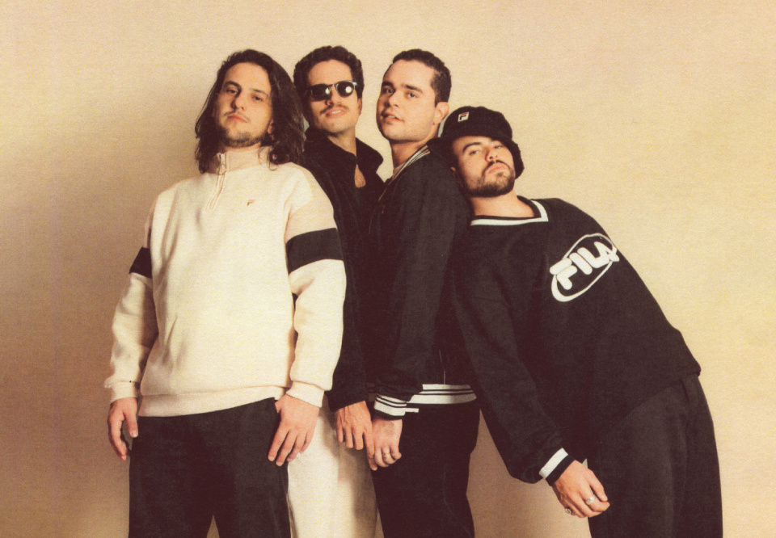
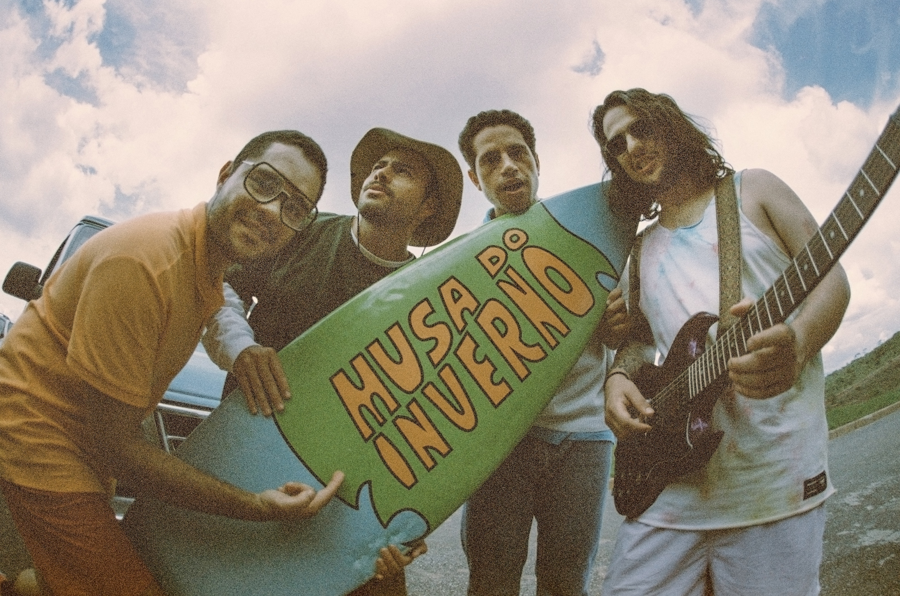

Lagum é uma banda mineira formada em 2014 por Pedro Calais (vocalista), Otavio Cardoso - Zani (guitarra), Jorge Borges (guitarra) e Francisco Jardim (baixo). O primeiro álbum foi lançado em 2016, Seja o Que Eu Quiser. Em meio a uma temporada de singles entre um álbum e outro, "Deixa" estourou nas plataformas de streaming e rádios, colocando a banda em destaque nacional. Em 2019, o segundo disco, Coisas da Geração, foi lançado e levou o grupo aos palcos do Brasil inteiro e mundo afora, marcando a primeira grande turnê do Lagum. Em 2021, Memórias (de onde eu nunca fui) foi lançado e indicado ao Grammy Latino.
Músicas favoritas
Galeria
 


